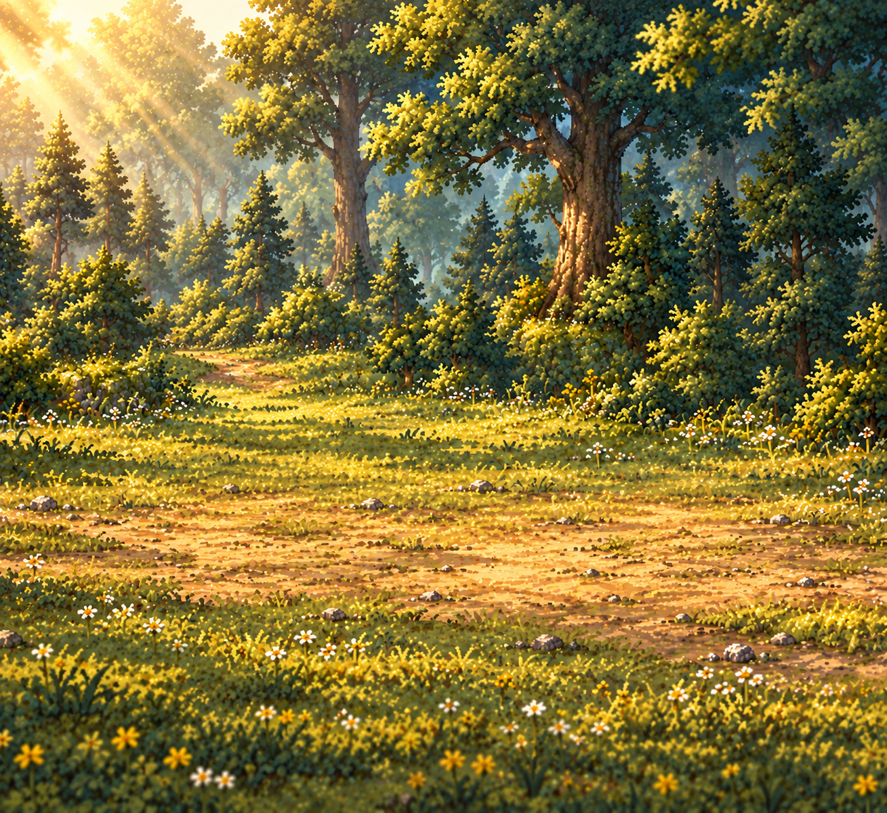
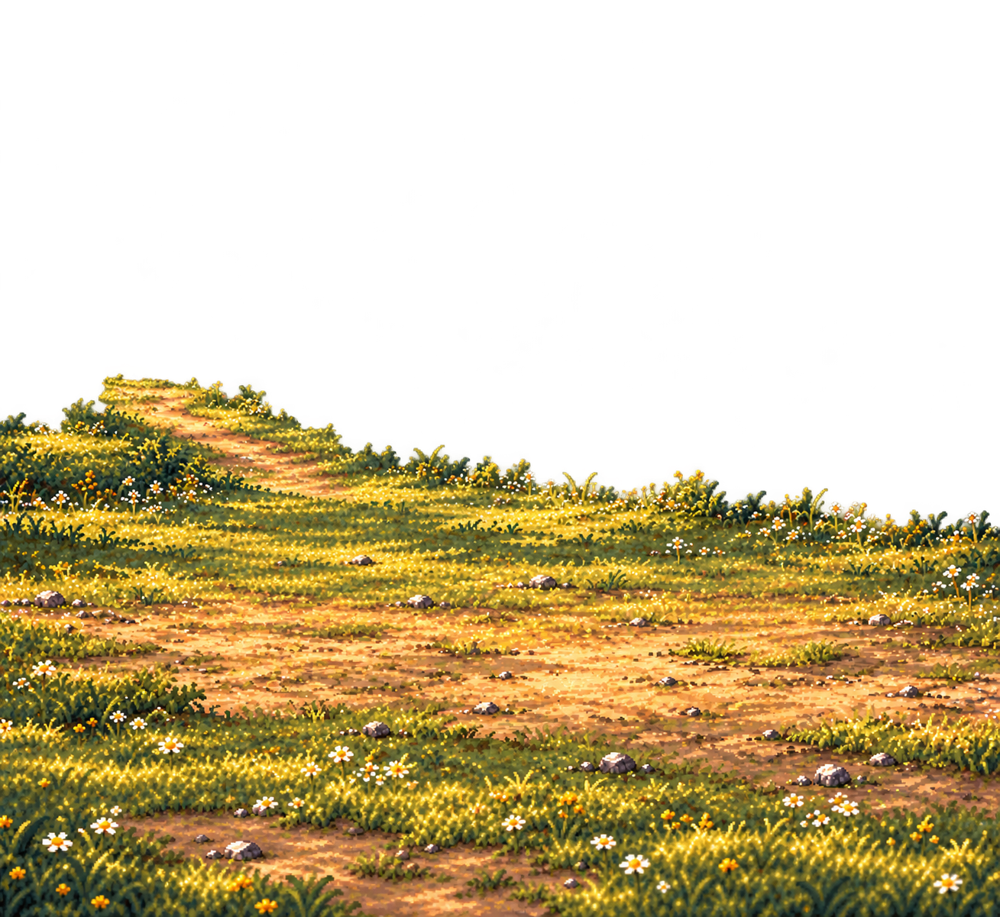
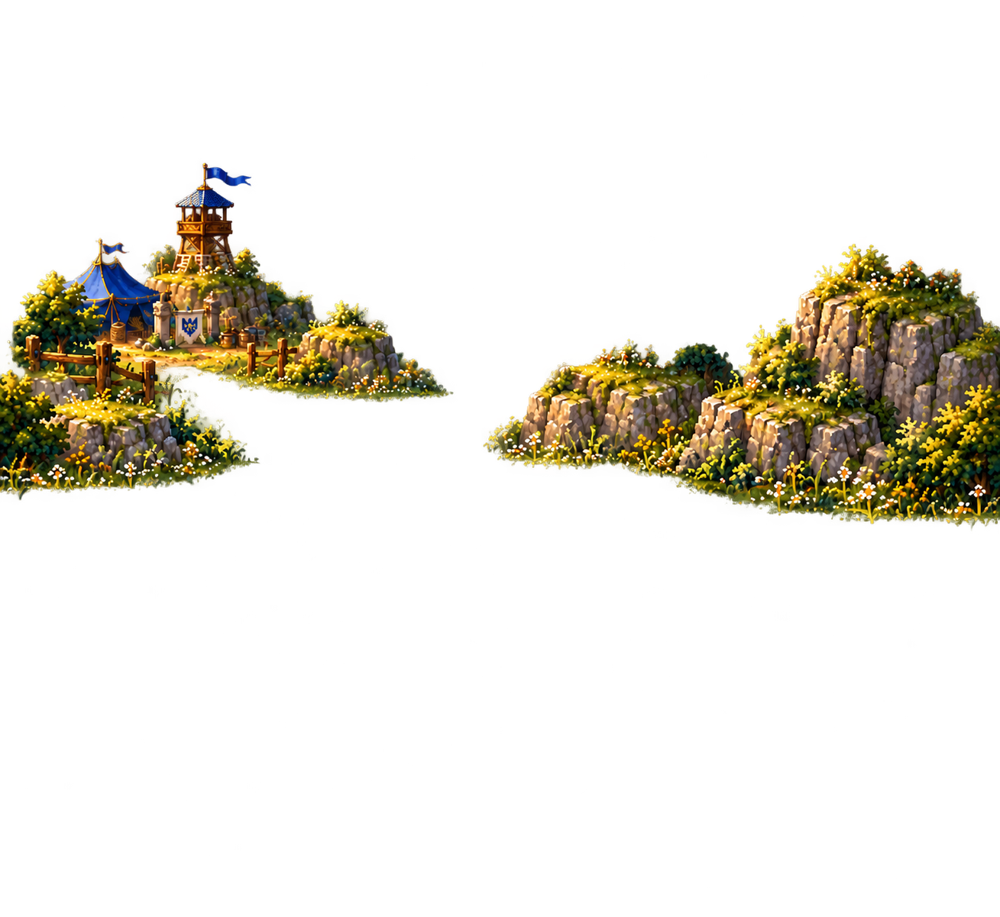
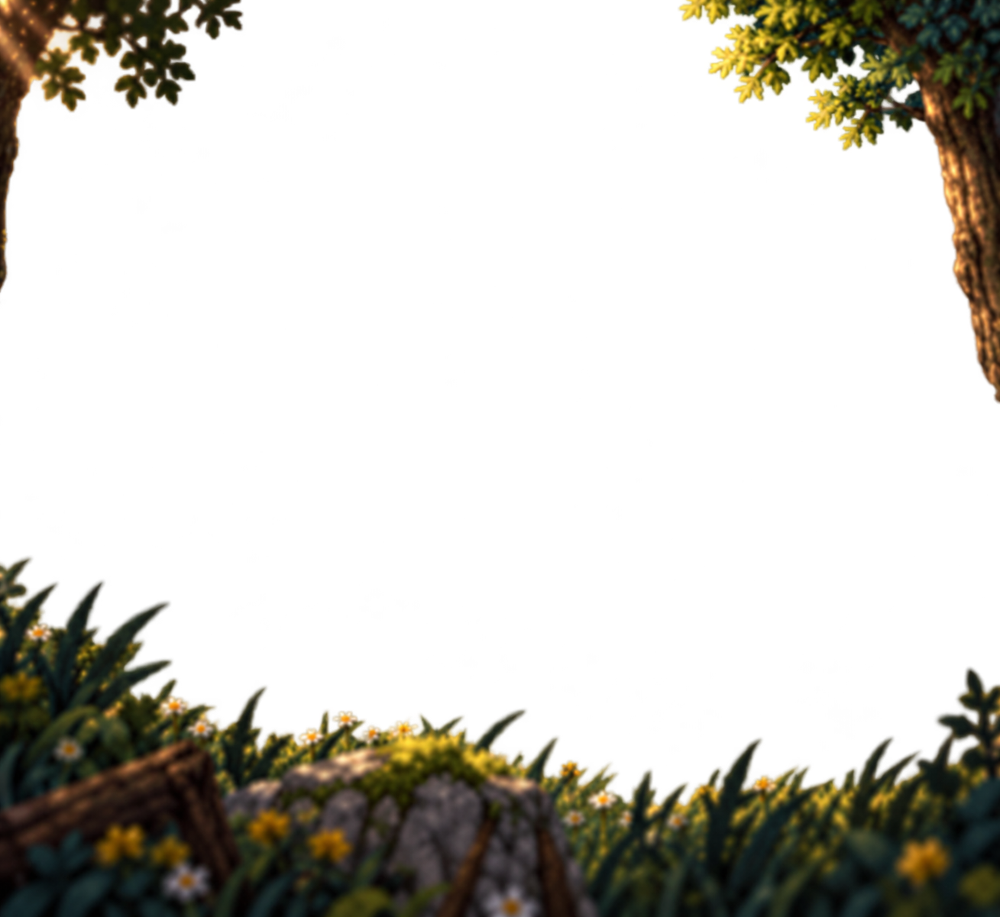

<!doctype html>
<html lang="zh-CN">
<meta charset="utf-8">
<meta name="viewport" content="width=device-width,initial-scale=1">
<title>Meadow Journey · 营地林地分层审核</title>
<style>
* { box-sizing: border-box; }
body { margin: 0; padding: 20px; background: #0d1913; color: #eee4c3; font: 16px system-ui, sans-serif; }
main { max-width: 1309px; margin: auto; }
h1 { font-size: 22px; margin: 0 0 10px; }
p { margin: 8px 0 16px; line-height: 1.6; }
fieldset { border: 1px solid #8d8158; border-radius: 10px; display: flex; flex-wrap: wrap; gap: 14px; margin: 0 0 16px; padding: 12px; }
label { cursor: pointer; }
input { accent-color: #e7bd57; width: 18px; height: 18px; vertical-align: middle; }
#scene { position: relative; width: 100%; aspect-ratio: 1309 / 1201; overflow: hidden;
 background-color: #27332c;
 background-image: linear-gradient(45deg,#3e4840 25%,transparent 25%),linear-gradient(-45deg,#3e4840 25%,transparent 25%),linear-gradient(45deg,transparent 75%,#3e4840 75%),linear-gradient(-45deg,transparent 75%,#3e4840 75%);
 background-size: 32px 32px; background-position: 0 0,0 16px,16px -16px,-16px 0;
}
.plate, #guides { position: absolute; inset: 0; width: 100%; height: 100%; object-fit: contain; pointer-events: none; }
[hidden] { display: none !important; }
#guides { z-index: 35; }
.review body { padding: 0; }
.review header, .review footer { display: none; }
.review main { width: 1309px; max-width: none; margin: 0; }
</style>
<main>
 <header>
  <h1>Meadow Journey · 营地旁林地</h1>
  <p>独立环境四层重组稿。人物和史莱姆另行挂载；开关图层可检查遮挡和补画区域。</p>
  <fieldset aria-label="环境图层">
   <label><input type="checkbox" checked data-layer="01-far-forest">远景树林</label>
   <label><input type="checkbox" checked data-layer="02-ground">战斗地面</label>
   <label><input type="checkbox" checked data-layer="03-midground">营地与岩石</label>
   <label><input type="checkbox" checked data-layer="04-foreground">前景遮挡</label>
   <label><input type="checkbox" id="show-guides">显示预留站位</label>
  </fieldset>
 </header>
 <div id="scene" role="img" aria-label="四层独立素材合成的营地旁林地战场，尚未加入独立人物或史莱姆">
  
  
  
  <svg id="guides" viewBox="0 0 1309 1201" hidden aria-hidden="true">
   <g fill="none" stroke="#fbebad" stroke-width="2" stroke-dasharray="7 6">
    <ellipse cx="392.7" cy="828.69" rx="76" ry="14"/>
    <ellipse cx="994.84" cy="822.685" rx="67" ry="12"/>
    <path d="M392.7 828.69v-288.24M994.84 822.685v-102.085"/>
   </g>
  </svg>
  
 </div>
 <footer><p>四张素材共用完整画布和缩放，未按透明外框单独裁切。此预览不模拟实时光照、视差或战斗规则。</p></footer>
</main>
<script>
if (new URLSearchParams(location.search).has('review')) document.documentElement.classList.add('review');
for (const input of document.querySelectorAll('[data-layer]')) {
 input.addEventListener('change', () => { document.getElementById(input.dataset.layer).hidden = !input.checked; });
}
document.getElementById('show-guides').addEventListener('change', event => {
 document.getElementById('guides').hidden = !event.target.checked;
});
window.sceneReady = Promise.all([...document.querySelectorAll('.plate')].map(image => image.decode()));
</script>
</html>
